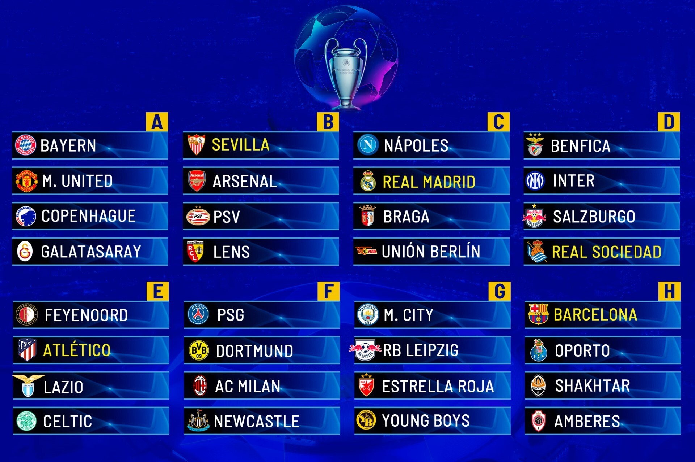

La fase de grupos consiste de 32 equipos, divididos en 8 grupos de 4 equipos, los 2 mejores avanzan a las eliminatorias
En esta edición, el grupo más complicado, o llamado el grupo de la muerte, fue el grupo F, con el PSG, el Borussia Dortmund, el AC Milan y el Newcastle
De estos grupos salieron 2 equipos como ganadores: